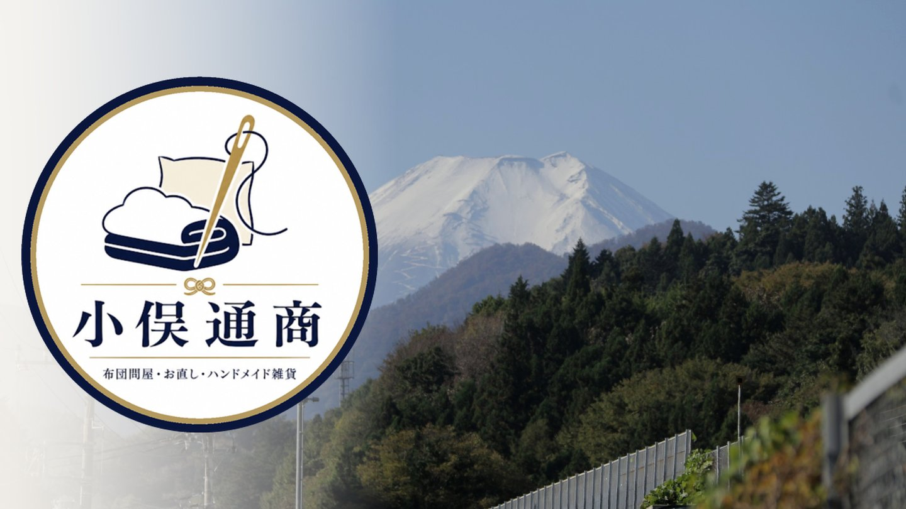
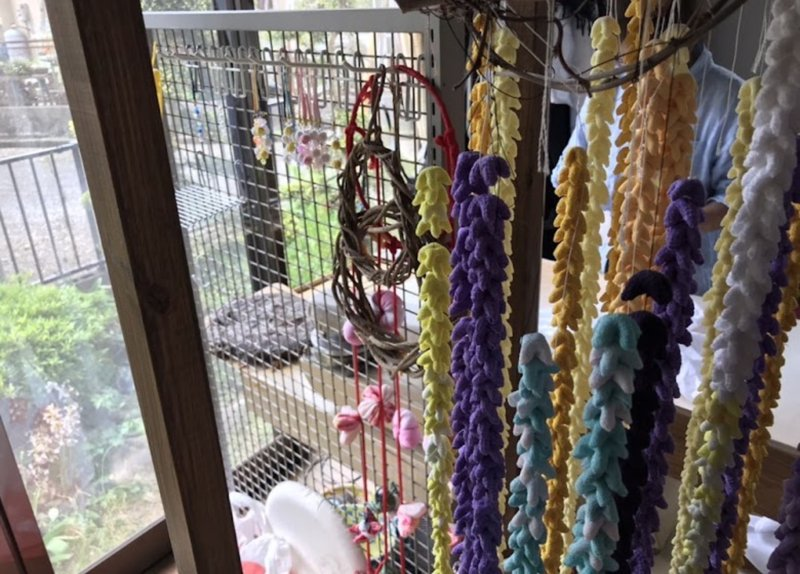
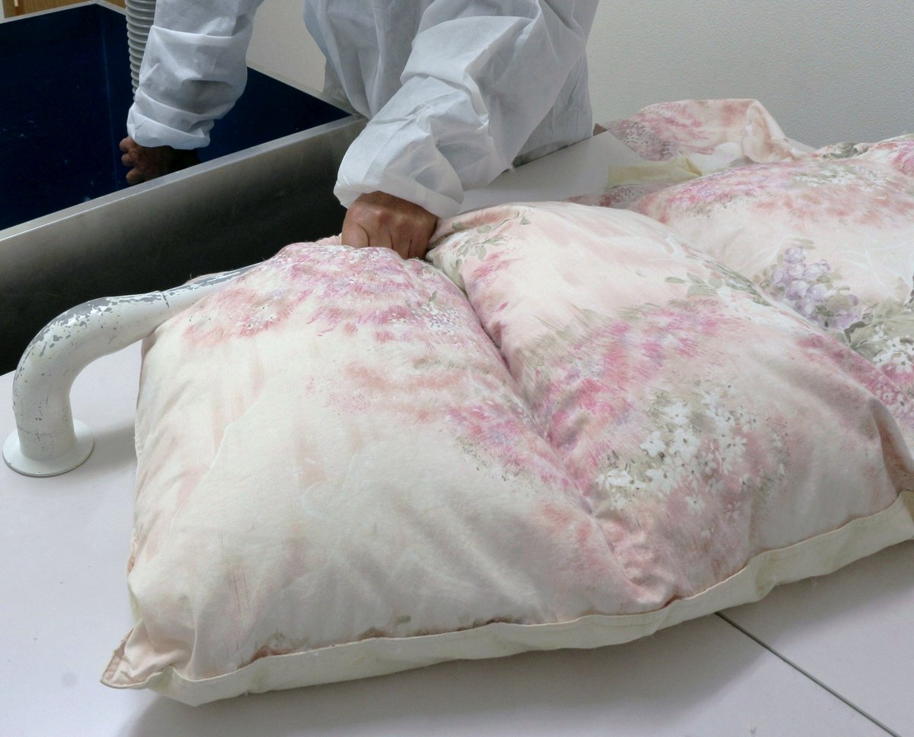
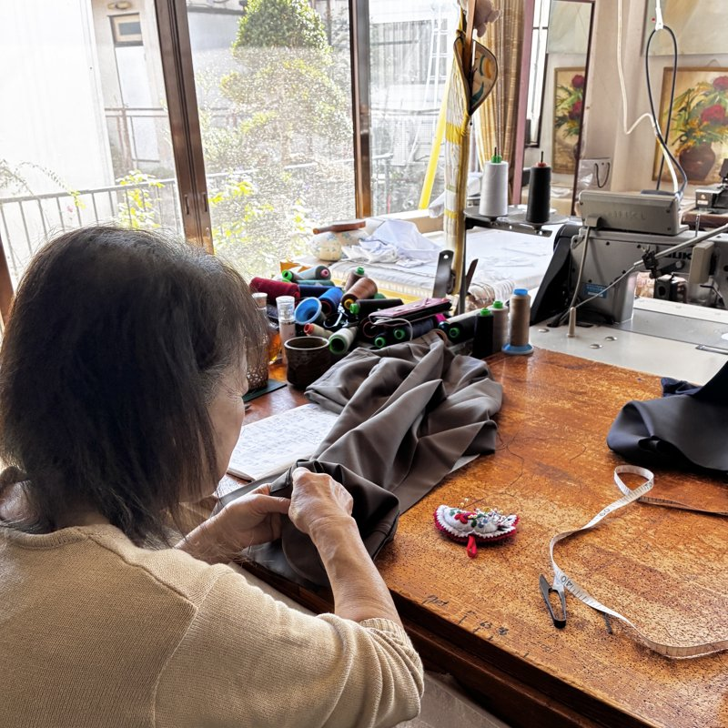
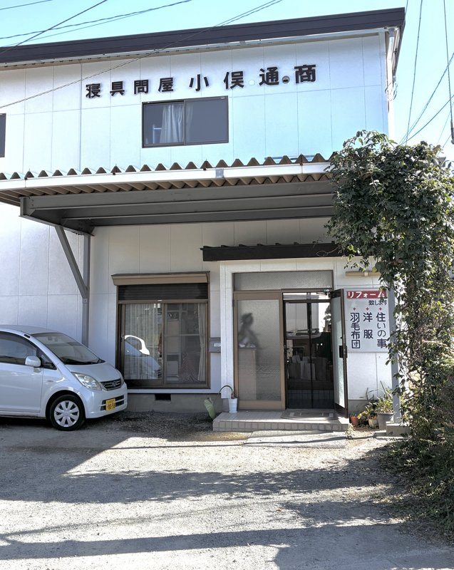

羽毛布団のリフォーム・洋服のお直し
山梨県都留市つる
0554-45-1356 お見積りは無料です。お気軽にお電話ください ✉ メールでお問い合わせ分からないことは、お電話でお気軽にどうぞ。営業時間外は、メールでもお問い合わせいただけます。

お使いの羽毛を取り出し、ふるいにかけて細かい羽根やホコリを取り除いて、新しい側生地にお仕立て直します。工場に出すのではなく、店で職人が仕立てています。
料金は下の表のとおりですので、お電話でもおおよそのお見積りをお伝えできます。お布団の大きさと、ご希望の側生地をお聞かせください。

お電話・ご来店お見積りお預かりお仕立て直し（約10日）お渡し・お支払い
お取りに伺う場合は、引き取りの際にお見積りをして、仕上がりをお届けします。
| 側生地 | シングル | ダブル |
|---|---|---|
| 綿100%・80番上質 | 25,000円 | 37,000円 |
| 綿100%・60番おすすめ | 22,000円 | 33,000円 |
| テトロンお手軽 | 19,000円 | 28,000円 |
| 足し羽毛200gを超えた分 | 100gあたり 3,000円 | |
価格はすべて税込です。生地や状態によって変わりますので、正確な金額はお持ちいただいてからお見積りします。
テトロンはポリエステルの生地のことです。軽くて丈夫で、お値段は一番お手頃です。ただ、夏は少し暑く感じ、においが出ることがあります。綿の生地は汗を吸いますので、一年中お使いになるなら綿100%の60番をおすすめしています。
足し羽毛は200gまで料金に含みます。実際にお足しする量は100gから300gほどのお布団が多く、200gを超えた分は100gあたり3,000円の追加となります。このことはお預かりのときにご説明し、最終的な金額はお渡しのときにお伝えいたします。足さなくてよいお布団もあります。
量はご希望で変えられます。「もっと暖かくしたい」という場合は多めに足してふっくら仕上げられますし、「軽くしたい」「足さなくていい」というご希望も承ります。（お仕立て代は変わりません。200gを超えて足した分のみ、100gあたり3,000円です）
羽毛の水洗いは行っておりません。取り出した羽毛をふるいにかけ、細かい羽根やホコリを取り除いてお仕立てします。その分、お安く、早くお返しできます。洗浄をご希望の場合はご相談ください。
お仕立ての際に、中の羽毛の状態を確かめます。羽毛が減り、羽根が多くなったお布団は、仕立て直してもふくらみが戻らないことがございます。その場合は、お仕立てを進める前にご連絡いたします。
お持ち込みが難しい場合は、お取りに伺って、仕上がりをお届けします。
| 都留市 | 無料 |
|---|---|
| 富士吉田市・大月市・上野原市 | 1,500円 |
お取りに伺い、仕上がりをお届けするまでの往復の料金です。枚数は問いませんので、何枚でもまとめてお出しいただけます。
サイズが合わなくなった服、傷んでしまった服を、着られる状態に戻します。お直しは、ご持ち込みでお受けしています。

| 裾上げ（ズボン・ミシン） | 300円 |
|---|---|
| 裾上げ（ズボン・手上げ） | 1,000円 |
| 裾上げ（Tシャツ） | 900円 |
| 袖丈詰め | 2,000円 |
| ウエスト幅出し・幅つめ（学生スカート・プリーツスカート等） | 2,500円 |
| スラックスのウエスト幅出し | 2,000円 |
| ファスナー交換（スラックス・スカート） | 1,000円 |
| ファスナー交換（ワンピース） | 1,500円〜 |
| オープンファスナー交換 | 2,500円 |
| ボタン付け（1個） | 100円 |
| ほつれ直し（1か所） | 500円 |
| ジーンズ穴補修（1か所） | 1,000円 |
| バッグ修理 | 破損箇所により異なります（店頭でご確認ください） |
生地や状態によって変わります。正確な金額はお持ちいただいてからお見積りします。

| 店名 | 小俣通商 |
|---|---|
| 住所 | 〒402-0056 山梨県都留市つる3-11-11 |
| 電話 | 0554-45-1356 |
| 営業時間 | 月〜金 9:00〜18:00／土 9:00〜12:00 |
| 定休日 | 日曜日 |
| 駐車場 | あり（基本2台） |